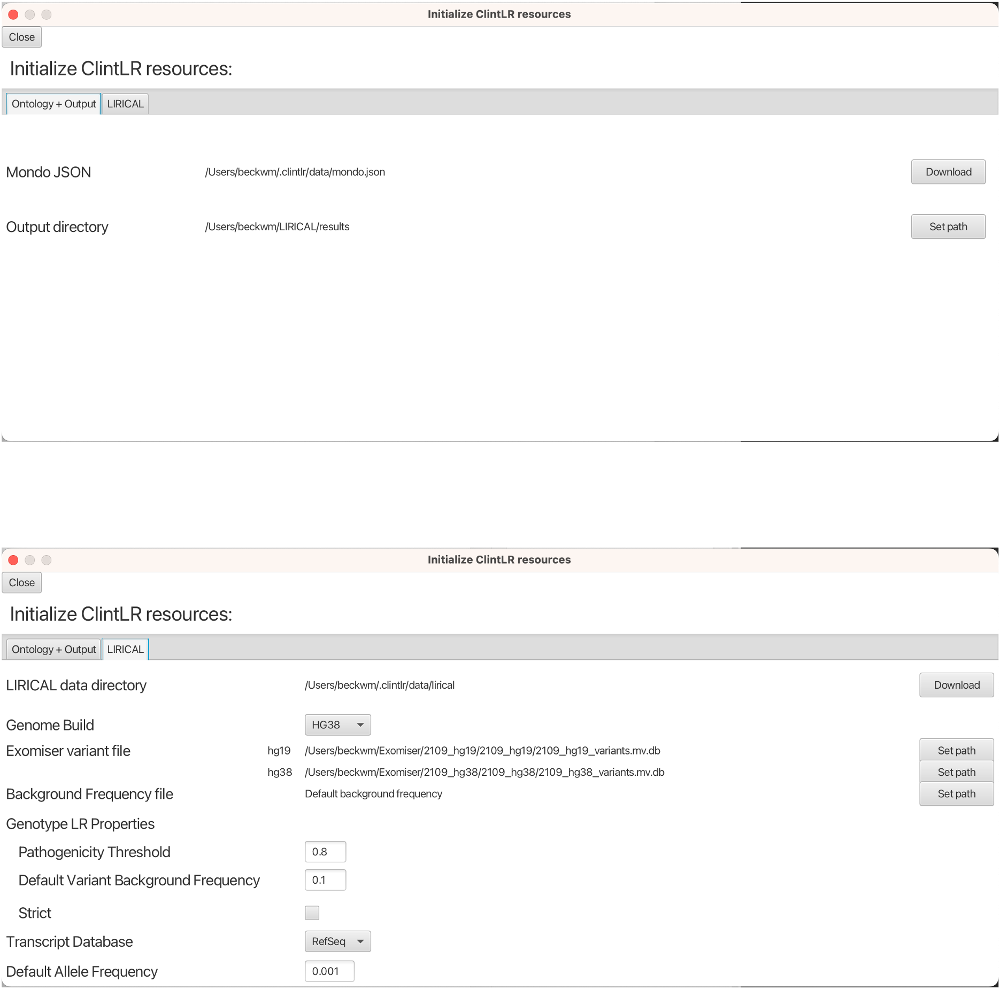

Setting up ClintLR
Prerequisites
ClintLR was written with Java version 17 but will compile under Java 17 or higher. If you want to build ClintLR from source, then the build process described below requires Git and Java Development Kit 17 or higher.
Installing ClintLR
Downloading prebuilt JAR file
Most users should use the prebuilt ClintLR executable JAR file. Executable JAR files for Linux, Mac, and Windows platforms can be downloaded from the releases page.
Building from sources
An executable JAR file can also be built from sources. When building from sources, LIRICAL needs to be installed separately. Instructions for installing LIRICAL as a library can be found here.
To build ClintLR from sources, go the GitHub page of ClintLR, and clone or download the project, then build the executable from source with Maven:
We use the Maven Wrapper for building the sources, so installation of Maven prior to build is not required.
The executable jar is located at the clintlr-gui/target subdirectory.
Launching ClintLR GUI
To launch the ClintLR GUI, run:
java -jar path/to/clintlr/jar
Resources Setup
Prior to performing analysis in the ClintLR GUI, the locations of certain resources (the Mondo ontology, output directory, LIRICAL data directory, and Exomiser variant files) need to be specified. This can be done from the Resources interface, accessed from the File -> Show Resources menu. Resources set in this interface are preserved between sessions and saved in a .clintlr configuration folder that is created automatically in the home directory.

Ontology + Output
The Mondo ontology and output directory paths are found in the Ontology + Output tab. The Mondo ontology is required to use ClintLR. Clicking the Download button will download and save the latest version of the Mondo ontology to your machine.
Note: There are currently no progress bars for the download buttons, however they are working in the background, and must only be clicked once.
The output directory refers to a local directory to which the analysis results files will be saved. This can be set using the Set Path button next to the Output directory field.
LIRICAL
LIRICAL resources are found in the LIRICAL tab. The LIRICAL data directory refers to the directory that contains additional files that LIRICAL requires to run. Similar to the Mondo ontology, clicking the Download button will download and save the LIRICAL files to your machine.
The Exomiser variant files refer to data files from Exomiser that LIRICAL uses to the annotate the VCF file and support variant interpretation. The Exomiser variant database files can be obtained from the Exomiser download site. Once the Exomiser files are downloaded, their local paths can be set using the respective Set Path buttons.
In the last tested Exomiser release 2309, the variant database names are:
- hg38: 2309_hg38_variants.mv.db
- hg19: 2309_hg19_variants.mv.db